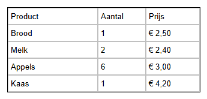

Leerpad › Les 1
Je eerste tabel
Doel: een eenvoudige tabel maken, tekst in de cellen typen en je werk bewaren
en bekijken als webpagina.

Tabel, rij, kolom en cel
- Een tabel bestaat uit rijen (horizontaal) en kolommen (verticaal).
- Waar een rij en een kolom elkaar kruisen, zit een cel: daarin komt de tekst.
- Boven en links van de tabel zie je de koppen (A, B, C ... en 1, 2, 3 ...). Daarmee kies je een hele kolom of rij.
Zo maak je het zelf
- Een nieuwe tabel heeft 5 kolommen en 5 rijen. We hebben er maar 3 nodig: klik op de kolomkop D en klik op het
tabblad
 Tabel (T) op DC
(Kolom verwijderen). Doe hetzelfde voor kolom E.
Tabel (T) op DC
(Kolom verwijderen). Doe hetzelfde voor kolom E. - Dubbelklik op de eerste cel en typ Product. Sluit af met Ctrl+Enter of klik op een andere cel.
- Typ zo ook Aantal en Prijs in de volgende cellen, en vul daaronder de boodschappen in.
- Is een kolom te smal? Sleep in de kolomkoppen de scheidingslijn naar rechts.
- Bewaar je ontwerp met
 Opslaan tabel designer. Zo kun je later verder werken.
Opslaan tabel designer. Zo kun je later verder werken. - Klik onderaan op Klik hier voor extra functies en daarna op
 Open test-browser: je ziet je tabel als webpagina.
Open test-browser: je ziet je tabel als webpagina.
Goed om te weten: het
.htd-bestand is je ontwerp, om verder aan te
werken. Wil je een echte webpagina, bewaar dan in het rolluik met Bewaar HTML Document een
.html-bestand (zie Bestanden & export).Opdracht
Voeg onderaan een rij toe met Eieren, 12 en € 3,50. Voeg daarna rechts een vierde kolom Winkel toe en vul in waar je elk product koopt.
Oplossing
Klik op het tabblad Tabel (T) op AR (Rij toevoegen): er komt een lege rij bij. Dubbelklik op de cellen en typ de tekst. Met AC (Kolom toevoegen) komt er een kolom bij; typ in de bovenste cel Winkel en vul de rest in. Bewaar opnieuw en bekijk het resultaat in de test-browser.
Werk je onder Linux? Dan opent deze help in je gewone browser en kan de knop het voorbeeld niet in
de designer openen. Open het dan zelf met Openen tabel designer: map lessen, bestand
les01-boodschappen.htd.